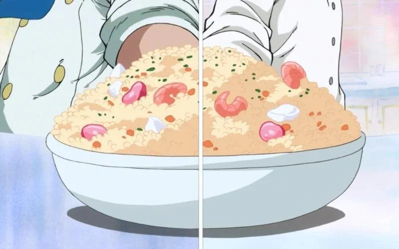

Seafood Rice

Description
A recipe for Sanji's famous Seafood Rice from One Piece.
Ingredients
- 2/3 cup jasmine rice
- 1 and 1/2 cup of water
- 1 green onion
- 150g seafood medley
- 3 eggs
- 1tbsp salt
- 2tbsp oil
Instructions
- Wash the rice twice, drain, and cook with the 1 and 1/2 cup water. Wait until the rice is cooked before proceeding with the rest of the steps.
- Cut the green onion into thin circular pieces and set aside.
- Using 1 tbsp oil, stir fry the seafood medley until fully cooked. Careful not to overdo it, but make sure it's not raw.
- Beat the eggs until even. In a hot pan, add a tbsp oil and the egg. While the egg is still half raw, put in the rice and mix together. If using a cast iron pan like what I used, stir fry on medium heat so that the egg and rice don't stick. Once all the egg is mixed in well with the rice and cooked, it's ok to turn up the heat to high to get more aroma.
- Add in the seafood medley and mix.
- Add in the green onion and turn off the heat. Mix well immediately with the heat off to have the flavors of the green onion infuse into the rice, but not be overcooked.